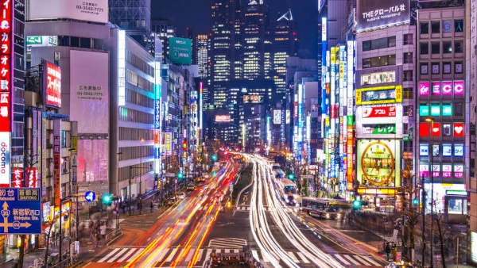
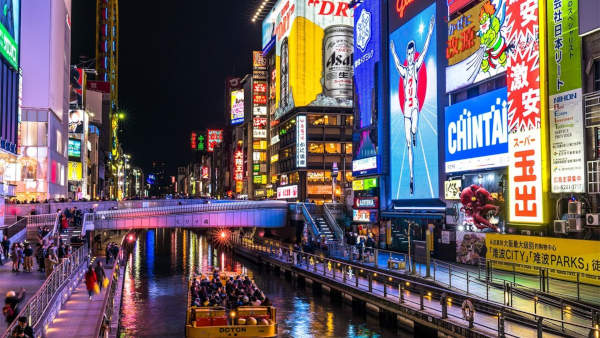
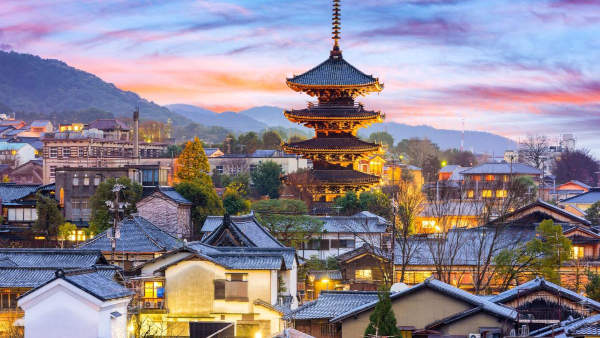
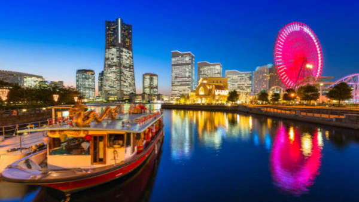
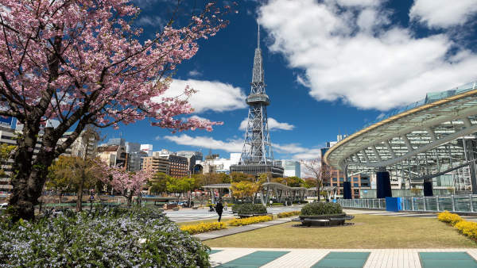
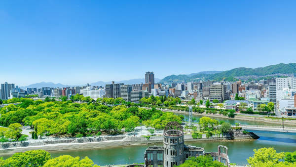
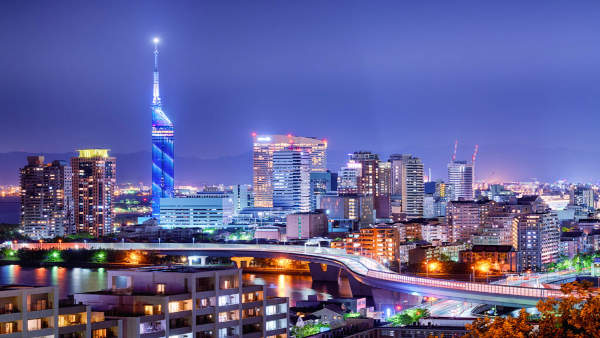
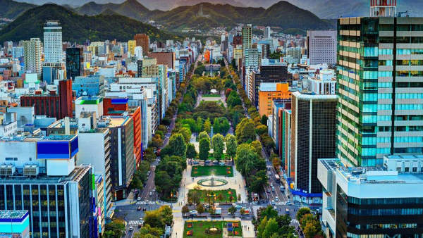

O Japão oferece uma grande diversidade de cidades para estudar e viver. Cada uma tem características únicas, desde metrópoles tecnológicas até cidades mais tranquilas e históricas. Aqui está nosso ranking das melhores cidades para intercâmbio, levando em consideração qualidade de vida, custo, oportunidades e experiências culturais.
Cidades Disponíveis – Onde Estudar e Viver no Japão
Tóquio - (東京)
A capital do Japão é uma metrópole vibrante com infinitas possibilidades. Conta com as melhores escolas de idiomas, universidades renomadas e diversas oportunidades de emprego.É perfeita para quem deseja estar no centro da tecnologia, moda e cultura pop japonesa.

Melhor para: Quem busca inovação, oportunidades de trabalho e vida urbana intensa.
Custo de vida: Alto
Universidades de destaque: Universidade de Tóquio (Todai), Waseda, Keio
Transporte: Extensa rede de metrô e trens eficientes
Osaka - (大阪)
A cidade tem um ótimo custo-benefício para estudantes e oferece muitas oportunidades de trabalho, principalmente na área de serviços. Além disso, é o paraíso dos amantes da comida japonesa, com pratos como okonomiyaki e takoyaki.

Melhor para: Quem quer uma cidade grande, mas mais descontraída que Tóquio.Osaka é conhecida por sua hospitalidade e clima mais descontraído.
Custo de vida: Moderado
Universidades de destaque: Universidade de Osaka, Kansai Gaidai
Transporte: Boa rede de metrô e trens
Kyoto - (京都)
A antiga capital do Japão é um dos destinos mais fascinantes para intercambistas. Com seus templos, santuários e ruas históricas, Kyoto proporciona uma imersão profunda na cultura japonesa. É ideal para quem quer aprender sobre arte, história e o idioma japonês em um ambiente mais tranquilo.

Melhor para: Quem deseja uma experiência mais tradicional e cultural.
Custo de vida: Moderado
Universidades de destaque: Universidade de Kyoto, Ritsumeikan
Transporte: Bons ônibus e trens, mas sem metrô extenso
Yokohama - (横浜)
A apenas 30 minutos de Tóquio, Yokohama é uma cidade moderna à beira-mar, com um ambiente mais calmo e menos lotado. É uma ótima escolha para quem quer aproveitar as oportunidades da capital, mas sem enfrentar o estresse diário de viver nela.

Melhor para: Quem quer viver perto de Tóquio, mas com mais tranquilidade.
Custo de vida: Moderado
Universidades de destaque: Universidade Nacional de Yokohama
Transporte: Ligação rápida com Tóquio por trem
Nagoya - (名古屋)
Nagoya é uma cidade grande, mas menos movimentada que Tóquio ou Osaka. Com uma forte presença industrial, especialmente de empresas como a Toyota, é um excelente local para quem quer estudar e trabalhar no setor automotivo ou tecnológico.

Melhor para: Quem busca um equilíbrio entre custo de vida e oportunidades.
Custo de vida: Moderado
Universidades de destaque: Universidade de Nagoya
Transporte: Bons trens e metrô
Hiroshima - (広島)
Hiroshima, além de sua importância histórica, é uma cidade moderna e bem organizada. É um ótimo lugar para quem busca estudar japonês e viver em um local com menos agitação. A cidade também é famosa por sua culinária e pelo icônico Hiroshima-style okonomiyaki.

Melhor para: Quem quer um ambiente tranquilo, seguro e acessível.
Custo de vida: Acessível
Universidades de destaque: Universidade de Hiroshima
Transporte: Bons trens e bondes
Fukuoka - (福岡)
Fukuoka tem sido eleita uma das melhores cidades do Japão para estrangeiros, pois oferece um ótimo equilíbrio entre qualidade de vida, custo baixo e boas oportunidades de estudo e trabalho. Seu clima mais quente e proximidade com outros países asiáticos a tornam um destino estratégico para estudantes internacionais.

Melhor para: Quem quer custo de vida acessível e clima agradável.
Custo de vida: Baixo
Universidades de destaque: Universidade de Kyushu
Transporte: Bons trens e metrô
Sapporo - (札幌)
Localizada na ilha de Hokkaido, Sapporo é ideal para quem quer viver em um ambiente mais calmo e com custo de vida acessível. A cidade é famosa por seus invernos rigorosos, estações de esqui e o Festival da Neve.

Melhor para: Quem gosta de frio, tranquilidade e belas paisagens.
Custo de vida: Baixo
Universidades de destaque: Universidade de Hokkaido
Transporte: Bons trens, mas com menos opções que cidades maiores